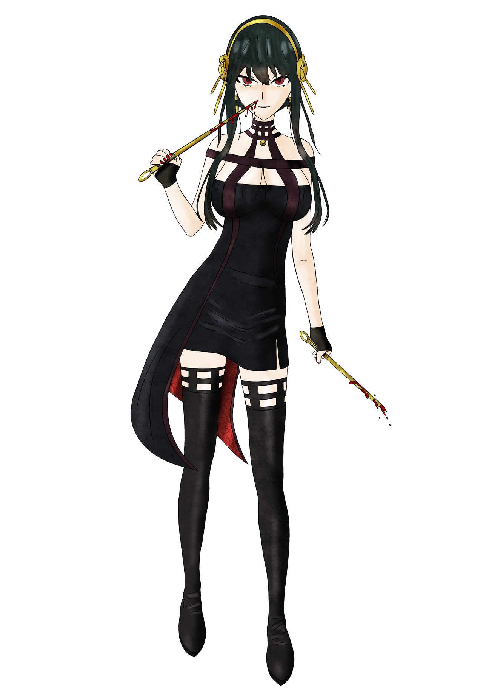

Spy x Family
Qual seu personagem predileto?
-
Anya Forger

Anya Forger é uma jovem adorável e inteligente com habilidades surpreendentes e uma história de fundo intrigante
-
Loid Forger
Loid Forger é o pseudônimo que o astuto espião, agente Twilight, usa em sua mais nova missão: a operação Strix
-
Anya Forger
Yor é uma assassina extremamente mortal, eliminando facilmente guardas e terroristas armados com armas para chegar até seus "clientes",